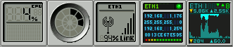

Algo de lo mucho que me maravilla del Software Libre es la gran cantidad y variedad de aplicaciones que existen en éste, las hay para todas las necesidades y gustos. Ante tal diversidad, en algunas ocasiones nos podemos sentir desorientados, en el sentido de decidir cuáles aplicaciones nos conviene instalar.
Podemos imaginarnos que el Software Libre es un gran bosque, donde nosotros como exploradores nos aventuramos en él, descubrimos lugares facinantes y compartimos nuestras experiencias.
Lo que pretendo con este manual, es mostrarles mi ruta preferida en este bosque, es decir, paso a paso cómo voy instalando mis aplicaciones preferidas hasta llegar a tener mi entorno de trabajo habitual. Debo dar mérito a muchos usuarios como ustedes que me han mostrado muchos de estos paquetes. También a los buscadores como Google y a los foros de discusión como buena fuente de información para conocer las aplicaciones libres.
Claro que aquí están impresas mis preferencias personales. En el Software Libre, todos tenemos la libertad de elegir las aplicaciones que queramos usar. Tome Usted de este manual la información que más le convenga...
Sobre esta segunda parte
En la primera parte de este manual hemos logrado instalar Gentoo Linux a un nivel básico, esto es, que podemos arrancar con éste y llegar a la consola en modo texto.
Si la meta de nuestra nueva instalación es tener un servidor de archivos, web, base de datos o firewall, instalaríamos sólo los paquetes necesarios para ello, por ejemplo, para un servidor LAMP instalamos Apache, MySQL y PHP. Al configurarlos y ponerlos en marcha tendrá listo un servidor eficiente y rápido con Gentoo Linux.
En cambio, en este manual vamos rumbo a tener un entorno de escritorio KDE y los paquetes preferidos de su servidor. Serán más pasos que si fuéramos a instalar un servidor.
Cómo instalar un nuevo Gentoo Linux usando la instalación anterior
Tal como fue en la primera parte podemos continuar instalando la nueva instalación mientras trabajamos en la anterior instalación. Gracias a que todo lo podemos hacer en una terminal.
Para ello, hice este sencillo bash script para montar las particiones de la nueva instalación. Ajuste las definiciones de las particones (/dev/sdaN) a las correspondientes en su equipo. Debe primero crear el directorio /mnt/gentoo. Ejecútelo como root.
#!/bin/bash
echo Montando...
mount /dev/sda6 /mnt/gentoo
mount /dev/sda3 /mnt/gentoo/usr/portage
mount /dev/sda1 /mnt/gentoo/boot
mount /dev/sda2 /mnt/gentoo/home
mount /dev/sda7 /mnt/gentoo/mnt/anterior
mount -t proc none /mnt/gentoo/proc
mount -o bind /dev /mnt/gentoo/dev
cp /etc/resolv.conf /mnt/gentoo/etc/
echo Listo.
mount | grep /mnt/gentoo
Despúes de ejecutarlo, hago el chroot y actualizo las variables del entorno.
# chroot /mnt/gentoo /bin/bash
# env-update
# source /etc/profile
# export PS1="(chroot) $PS1"
Listo. Puede continuar la instalación.
Le advierto que si dentro del chroot arranca un demonio o servicio éste pudiera tener conflictos con los demonios del sistema que esté usando. Por ejemplo, si dentro del chroot arranco el PostgreSQL y también lo tengo corriendo en el otro sistema, entonces ambos solicitarán los mismos puertos TCP para comunicarse y uno de los dos fallará. Así pues, le recomiendo que sólo instale y configure; cuando reinicie el equipo y entre en su nueva instalación podrá probar sus demonios.
Si quiero abandonar el chroot ejecuto exit.
# exit
Y ejecuto este otro bash script para desmontar las particiones.
#!/bin/bash
echo Desmontando...
umount /mnt/gentoo/dev
umount /mnt/gentoo/proc
umount /mnt/gentoo/mnt/anterior
umount /mnt/gentoo/home
umount /mnt/gentoo/boot
umount /mnt/gentoo/usr/portage
umount /mnt/gentoo
echo Listo.
mount | grep /mnt/gentoo
Cambio el profile
Instalo eselect, que es un programa para revisar y cambiar ciertas configuraciones del sistema; entre ellas el profile establecido.
# emerge eselect
Por defecto, el stage stage3-i686-2008.0.tar.bz2 usa un profile genérico. Para ver el profile en uso, ejecuto:
# eselect profile show
Current make.profile symlink:
/usr/portage/profiles/default/linux/x86/2008.0
Para listar todos los profiles disponibles, ejecuto:
# eselect profile list
Available profile symlink targets:
[1] default-linux/x86/2006.1
[2] default-linux/x86/2006.1/desktop
[3] default-linux/x86/2007.0
[4] default-linux/x86/2007.0/desktop
[5] hardened/x86/2.6
[6] selinux/2007.0/x86
[7] selinux/2007.0/x86/hardened
[8] default/linux/x86/2008.0 *
[9] default/linux/x86/2008.0/desktop
[10] default/linux/x86/2008.0/developer
[11] default/linux/x86/2008.0/server
[12] hardened/linux/x86
Como nuestro fin es Gentoo Linux con entorno de escritorio completo, vamos a seleccionar el profile desktop.
# eselect profile set default/linux/x86/2008.0/desktop
Y reviso para asegurarme del cambio:
# eselect profile show
Current make.profile symlink:
/usr/portage/profiles/default/linux/x86/2008.0/desktop
Configuraciones adicionales para el portage
En /etc/make.conf se definen los parámetros de compilación de los paquetes que vayan a instalar. La variable USE está formada por una serie de banderas o flags que habilitan o deshabilitan opciones de la compilación de los paquetes.
Las opciones que escriba en la variable USE dependerán de muchos factores, desde los componentes de hardware hasta el uso fina que le vaya a dar al equipo. Por ejemplo, yo prefiero no usar arts el cual es el demonio de sonido del KDE. No funciona tan bien como desearía; aunque su desactivación me deja sin ningún sonido para los avisos del KDE; prefiero un entorno silencioso y configurar ALSA como la salida del sonido.
Este es el contenido de mi archivo /etc/make.conf
#
# /etc/make.conf
#
# Dell Inspiron 9300
#
# This should not be changed unless you know exactly what you are doing. You
# should probably be using a different stage, instead.
CHOST="i686-pc-linux-gnu"
# Intel(R) Pentium(R) M processor 1.73GHz
# CPU Family : 6
# Model : 13
CFLAGS="-O2 -march=pentium-m -pipe -fomit-frame-pointer"
CXXFLAGS="${CFLAGS}"
# Dos compilaciones paralelas
MAKEOPTS="-j2"
# Conservar compilaciones
FEATURES="buildpkg fixpackages"
PKGDIR=/usr/portage/packages
# Idioma
LINGUAS="es"
#
# Variable USE
#
USE="-arts -gnome -kerberos a52 aac aalib amr amrnb amrwb apache2 bluetooth \\
cups curl css dts dv dvb ffmpeg flac ftp gd gtk ieee1394 imagemagick java \\
joystick kde laptop lame matroska mmx mmxext mtp php ppd pcmcia postgres \\
qt3 qt4 ruby samba sse sse2 theora threads v4l v4l2 vcd wifi x264 \\
xscreensaver xvid"
# Xorg
INPUT_DEVICES="keyboard mouse synaptics joystick evdev"
VIDEO_CARDS="radeon vesa"
# Apache 2
APACHE2_MODULES="actions alias auth_basic authn_anon authn_default \\
authn_file authz_default authz_groupfile authz_host authz_owner authz_user \\
autoindex cache deflate dir disk_cache env expires file_cache filter \\
include info log_config logio mem_cache mime mime_magic negotiation \\
rewrite setenvif status unique_id vhost_alias"
# Servidor de paquetes
#PORTDIR=/usr/portage
#DISTDIR=${PORTDIR}/distfiles
#SYNC=rsync://SERVIDOR/gentoo-portage
#FETCHCOMMAND="rsync rsync://SERVIDOR/gentoo-packages/\${FILE} ${DISTDIR}"
En /etc/portage/package.use doy cambios en la variable USE a programas en particular.
# HAL con soporte para Dell Inspiron 9300
sys-apps/hal dell
# Sin GTK+
sys-devel/gcc -gtk
media-libs/imlib -gtk
# Sin gd
sys-libs/glibc -gd
# Java plug-in para los navegadores de internet
dev-java/sun-jdk nsplugin
# Krdc con remote desktop
kde-base/krdc rdesktop
# LaTeX con componentes extra
app-text/texlive extra
# wxGTK es usado por Audacity. Sin GStreamer
x11-libs/wxGTK -gstreamer
# KMPlayer debe usar solo MPlayer y Xine
media-video/kmplayer -gstreamer mplayer xine
# XSane es para que Gimp pueda usar el scanner
media-gfx/xsane gimp
# i8kutils requiere tk para monitorear la temperatura
app-laptop/i8kutils tk
En /etc/portage/package.keywords doy permiso a Gentoo Linux que instale las versiones inestables de ciertos paquetes.
# KPowerSave
sys-power/kpowersave
# Mozilla Firefox 3.0
net-libs/xulrunner
dev-libs/nspr
dev-libs/nss
www-client/mozilla-firefox
# Para usar el scanner HP Scanjet 4070 necesito el driver hp3900
media-gfx/sane-backends
Servidor gráfico: el Xorg
La primer instalación es el servidor X.org que constituye el motor gráfico, para la posterior instalación del (o los) entornos gráficos. Así como algunas tipografías libres.
# emerge xorg-x11
# rc-update add dbus default
# emerge freefonts terminus-font corefonts
Debe de configurar xorg.conf de acuerdo a su equipo. Yo ya tengo listo mi archivo xorg.conf para mi Dell Inspiron 9300 con chip ATI M22. En esta instrucción hago una copia de la instalación anterior.
# cp /mnt/anterior/etc/X11/xorg.conf /etc/X11/
Para probar que X.org funcione bien, instale y ejecute un gestor de ventanas ligero, le recomiendo FluxBox.
# emerge fluxbox
Una forma para usar Fluxbox es crear un archivo llamado .xinitrc con el nombre del ejecutable. Este archivo debe de estar en el home del usuario. Estando listo, arranque las X's con FluxBox ejecutando startx.
$ echo "fluxbox" > ~/.xinitrc
$ startx
Muy en particular para la Dell Inspiron 9300 instalo estas utilerías propias para el hardware que tengo:
# emerge radeontool
# emerge i8kutils
Base de datos: PostgreSQL
Mi base de datos preferida es el PostgreSQL, el cual instalo con:
# emerge postgresql
# emerge --config =postgresql-8.0.15
# rc-update add postgresql default
Puede arrancar el demonio para dar de alta a un usuario del PostgreSQL (si está cargado sólo el nuevo sistema, recuerde lo mencionado en "Para hacer una nueva instalación mientras sigue usando la anterior").
# /etc/init.d/postgresql start
Como root cámbiese al usuario del sistema postgres:
# su - postgres
Para crear el usuario guivaloz con cualidades para crear nuevas bases de datos y nuevos usuarios en el PostgreSQL
$ createuser -a -d -P -E guivaloz
$ exit
Si es paranoico, modifique la capacidad de ingresar como el usuario postgres para que NO ingrese.
# usermod -s /sbin/nologin postgres
Pruebe que tenga acceso a las bases de datos con la cuenta de usuario.
$ psql -l
Listado de base de datos
Nombre | Dueño | Codificación
-----------+----------+--------------
template0 | postgres | UNICODE
template1 | postgres | UNICODE
(2 filas)

Servicios para el desarrollo de aplicaciones web
Instalo el servidor de páginas web Apache y luego el lenguaje de programación PHP.
# emerge apache
# emerge php
Java
Instalo el Java en este punnto, de una vez, ya que es una dependencia que me solicitarán los navegadores de internet. También me interesa el desarrollo en este lenguaje de programación.
# emerge virtual/jre
Samba
Samba es una implementación libre del protocolo de archivos compartidos de Microsoft Windows. Esta instalación jalará además los paquetes CUPS y GTK+.
# emerge samba
Más instalaciones previas a la instalación del KDE
Los Dock Applications son pequeños programas que en su mayoría trabajan como monitores del equipo. Son herencia del gestor de ventanas Window Maker y consumen muy pocos recursos.

Mis preferidos son el monitor de la carga del procesador, de la memoria, y varios de redes. Los instalo con:
# emerge wmcpuload wmmemmon wmnd wmifinfo wmwifi
Para controlar el muro de fuego, instalo el ejecutable que me permite controlarlo:
# emerge iptables
Instalo el lenguaje de programación Ruby junto con la gema RedCloth que uso en el CMS de Movimiento Libre:
# emerge ruby eruby rubygems redcloth
VIM es un excelente editor de texto en consola:

# emerge vim
Para ver fotografías, me gusta el GQView el cual es ligero y rápido.

# emerge gqview
Para guardar mis contraseñas uso el KED Password Manager

# emerge kedpm
En el siguiente screenshot verá al gestor de ventanas FluxBox con algunas aplicaciones que he instalado. Es más cómodo seguir instalando en este entorno, simplemente por que la terminal nos muestra más información.

Base del KDE
Instalo el HAL que de hecho lo requiere el KDE. HAL es una capa de abstracción de hardware software que permite a las aplicaciones de escritorio tengan acceso a información de hardware.
# emerge hal
# rc-update add hald default
Al instalar HAL se crea el grupo plugdev al cual deben de agregarse los usuarios para poder montar dispositivos de almacenamiento externo (como las memorias USB). Así que agrego mi cuenta habitual a ese grupo.
# gpasswd -a guivaloz plugdev
Instalo la base del KDE y la capacidad multilingüe del mismo con:
# emerge kdebase-meta kde-i18n
Luego edito el archivo /etc/conf.d/xdm
# nano -w /etc/conf.d/xdm
Configuro que al encender el equipo, arranquen las X's y se cargue el gestor gráfico KDM cambiando la siguiente línea:
DISPLAYMANAGER="kdm"
Luego configuramos que se inicien las X's al encender el equipo.
# rc-update add xdm default
Reinicie el equipo y pruebe su nueva instalación. Bienvenido a KDE.


En la tercera parte de este manual continuaré con la instalación de mis aplicaciones favoritas.